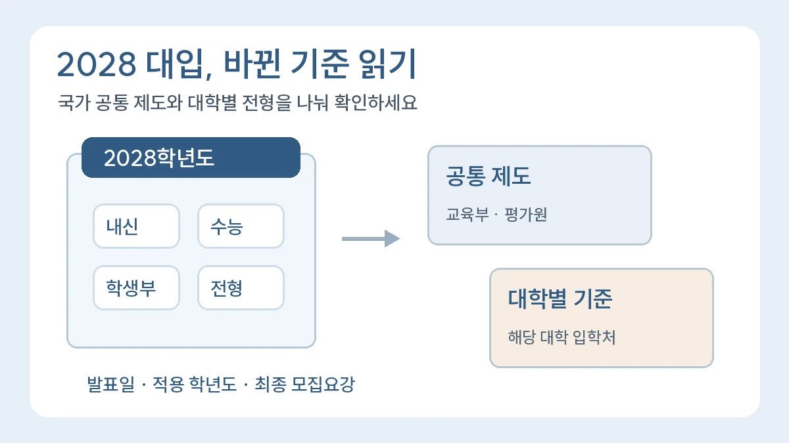

2028 대입 변경사항 총정리: 내신·수능·대학별 전형 확인법
2026년 고1의 지원 학년도부터 확인하고, 공통 제도와 대학별 조건을 구분하세요
목차
- 지원 학년도와 현재 학년 맞추기
- 통합형 수능의 변화와 예외
- 내신 성취도와 석차등급
- 국가 제도와 대학별 전형
- 학생용 확인표
- 학생부교과·학생부종합 전형 확인 항목
- 고1~고3 과목·탐구 로드맵
- 자주 묻는 질문
- 공식 근거와 확인 범위
핵심 요약
- 2028학년도와 2027년 수능 시행연도를 구분
- 내신 5등급과 수능 성적 체계를 혼동하지 않기
- 대학·모집단위·전형별 최신 문서로 실제 조건 확인

2028 대입의 핵심 변화는 선택과목 없는 통합형 수능과 고교 내신 5등급 체제입니다. 다만 내신의 성취도·석차등급, 수능 성적, 대학별 전형 기준은 서로 다른 정보입니다. 같은 ‘5등급’이라는 말로 모두 설명하거나, 특정 과목을 고르면 입시에 유리하다고 단정하면 안 됩니다.[1][2]
이 글은 2028학년도 대입을 준비하는 학생·학부모가 공통 제도와 대학별 확인사항을 나누는 출발점입니다. 확인 기준일은 2026년 11월 10일이며, 최초 개편 확정 발표일인 2023년 12월 27일과 다릅니다.[1] 대학별 모집단위·전형을 모두 비교한 자료나 개인별 합격 예측이 아닙니다.
1. 먼저 ‘2028학년도’와 현재 학년을 맞춰 보세요
2028학년도는 대학 입학 학년도입니다. 2028학년도 수능은 2027년 11월 18일에 시행되고 성적은 2027년 12월 10일에 통지될 예정입니다.[2] 시험을 보는 해와 대학에 입학하는 해를 구분해야 합니다.
일반적인 3년제 고교 진급을 기준으로 2025년 고1 입학생은 2026년 고2, 2027년 고3을 거쳐 2028학년도 대입을 준비합니다. 반면 2026년 현재 고1의 일반적인 현역 대입 대상은 2029학년도입니다. 교육부의 2026년 8월 18일 발표도 당시 고1이 응시할 시험을 2029학년도 수능으로 안내합니다.[5] 조기졸업·학적 변동·재수 등은 따로 확인하세요.
그렇다고 현재 고1에게 2028 개편이 무관한 것은 아닙니다. 교육부는 2029학년도에도 2028학년도부터 바뀐 수능 체제를 동일하게 적용한다고 설명합니다.[5] 다만 지원 대학의 전형은 자신의 지원 학년도로 다시 찾아야 합니다. 오래된 자료의 ‘현재 고1’을 오늘의 고1로 바꿔 읽지 마세요.
2. 수능은 무엇이 달라지고 무엇은 남을까요?
- 국어: 화법과 언어·독서와 작문·문학을 바탕으로 공통 출제합니다.[1][2]
- 수학: 대수·미적분Ⅰ·확률과 통계가 공통 출제과목입니다. 미적분Ⅱ·기하가 수능 출제에 포함되지 않는다는 뜻이지, 고교 과목이 없어지거나 대학별 이수 판단에서도 의미가 없어진다는 뜻은 아닙니다.[1][6]
- 사회·과학탐구: 통합사회·통합과학 체제로 바뀝니다. 사회·과학탐구 영역을 선택한 수험생은 두 영역에 모두 응시해야 합니다.[2]
- 응시 영역의 예외: 한국사는 필수이며, 한국사 외 영역은 일부 또는 전부를 선택해 응시하는 구조입니다. 제2외국어/한문은 9개 과목 중 하나를 고르는 선택이 남습니다. ‘선택과목 폐지’를 모든 영역 의무응시나 모든 선택의 폐지로 확대하지 마세요.[2]
수능도 5등급으로 바뀌는 것은 아닙니다. 내신 5등급 전환과 수능 성적 체계는 별개입니다. 수능의 영어·한국사·제2외국어/한문은 절대평가 등급을, 이외 영역·과목은 상대평가 성적을 제공하는 구조를 구분해 확인하세요.[2] 학교 과목 선택은 수능 출제범위 하나만이 아니라 학습 준비와 해당 대학 기준을 함께 보고 결정합니다.
3. 내신에서는 성취도와 석차등급을 나눠 읽으세요
2025년 고교 입학생부터 적용되는 체제에서는 원칙적으로 성취도 A~E와 석차등급 1~5를 함께 기재합니다.[1][7] A는 성취수준에 관한 정보이고, 1등급은 집단 내 상대적 위치에 관한 정보입니다. A를 받았으니 자동으로 1등급이라고 바꿔 읽을 수 없습니다.
5등급의 구간 비율은 순서대로 10%·24%·32%·24%·10%이며, 누적 비율은 10%·34%·66%·90%·100%입니다.[1] 이는 성취도 A~E의 분포나 대학 합격확률이 아닙니다. 실제 석차 산출은 동점자와 수강 인원 등 관련 지침을 함께 적용하므로 ‘우리 반 인원×10%’만으로 특정 학생의 등급을 확정하지 않습니다.
모든 과목의 표기가 같지는 않습니다. 사회·과학의 정해진 융합선택 9과목은 석차등급을 산출하지 않으며, 과학탐구실험·체육·예술·교양 등에도 별도 표기 방식이 있습니다.[7] 과목 유형별 설명은 진로선택과목과 평가 정보 안내에서 확인하세요. 석차가 없다는 이유로 평가나 대학 반영 자체가 없다고 생각하면 안 됩니다.
4. 국가 공통 제도와 대학별 전형을 분리하세요
대교협은 2026년 4월 30일, 194개 회원대학이 제출한 2028학년도 대학입학전형시행계획을 취합해 공표했습니다.[3] 이 발표가 모든 대학·학과의 평가 방식이 같다는 뜻은 아닙니다. 발표 당시의 모집 통계도 이후 수정 가능성을 확인하지 않고 ‘현재 최종 정원’이라고 재사용하지 않습니다.
대학입학전형 기본사항은 공통 운영 원칙, 대학별 시행계획은 해당 대학의 선발 계획입니다. 실제 지원 단계에는 모집요강과 변경 공지도 함께 봅니다. 이번에 확인한 2028 기본사항 첨부에는 2026년 7월 31일 개정 표시가 있습니다. 시행계획은 원칙적으로 공표 후 변경이 제한되지만 정해진 사유와 절차에 따른 수정이 가능하므로 최초 발표본만 저장하고 끝내지 마세요.[4]
- 지원 학년도: 2028학년도 문서인지 먼저 확인합니다.
- 대학·캠퍼스·모집단위·전형: 같은 대학 안에서도 조건이 다를 수 있으므로 문서의 정확한 표를 찾습니다.
- 학생부: 반영 교과·과목, 성취도·석차등급 환산, 서류평가 유무와 방법을 확인합니다.
- 수능·면접: 반영 영역·비율·최저학력기준·가감산점·면접 방식 중 자신의 전형에 해당하는 항목을 기록합니다.
- 문서 버전: 공지일·수정일·파일명·해당 쪽수와 확인일을 함께 남깁니다.
위 목록은 공식 기본사항의 확인 항목을 참고해 편집팀이 만든 점검 순서입니다.[4] 특정 대학이 세특을 일률적으로 몇 % 반영한다거나 모든 전형에서 특정 과목을 필수로 요구한다는 뜻은 아닙니다. 권장·필수·가산점·평가 참고는 같은 표현이 아니므로 해당 대학의 문구를 그대로 구분해 기록하세요.
5. 학생이 지금 만들 수 있는 확인표
정보를 더 많이 모으기 전에 ‘공통 제도 / 우리 학교 운영 / 지원 대학 기준’ 세 칸을 만들어 보세요. 아래는 실제 대학의 전형표가 아닌 교육용 확인표 예시입니다.
- 질문: 미적분Ⅱ를 선택할까? → 공통 제도 칸에는 ‘2028 수능 출제에 미포함’, 학교 칸에는 ‘개설 학기·선수 학습·시간표 확인 필요’, 대학 칸에는 ‘지원 학과의 이수·권장·반영 기준 미확인’이라고 나눠 적습니다.
- 질문: 탐구보고서를 제출하면 학생부에 들어갈까? → 제출 사실과 교사가 수업·평가에서 관찰한 학습 과정은 다릅니다. 학생부 기재요령과 학교 안내에 맞춰 확인하고, 자동 반영이라고 쓰지 않습니다.[7]
- 확인이 끝나지 않은 칸: 추측으로 채우지 말고 ‘미확인’으로 남긴 뒤 담당교사 상담이나 공식 문서 확인 과제로 바꿉니다.
과목을 고르는 실제 순서는 고교학점제 선택과목 가이드, 수업 탐구를 시작할 때는 탐구보고서 대표 작성 가이드를 함께 읽으세요. 수업 과정의 사실을 정리하는 방법은 교사가 확인할 수 있는 활동 사실 정리법으로 이어집니다.
6. 학생부교과·학생부종합 전형에서 각각 확인할 것
대교협의 2028학년도 기본사항은 학생부위주 전형을 둘로 나눕니다. 학생부교과 전형은 “학생부 교과 성적을 중심으로 평가하는 전형”, 학생부종합 전형은 “입학사정관 등이 참여하여 학생부를 중심으로 학생을 종합평가하는 전형”입니다(PDF 8쪽, 인쇄 4쪽).[4] 같은 학생부를 쓰더라도 확인할 항목이 다릅니다.
학생부교과 전형: 내신 5등급 이후 확인할 네 가지
- 반영 과목의 범위: 전 과목인지, 특정 교과만인지 봅니다.
- 성취도와 석차등급을 섞는 방식: 예를 들어 연세대 2028학년도 시행계획의 학생부교과(추천형)는 공통·일반선택·진로선택 과목(반영과목 A)을 등급점수 70%와 성취도 30%로 반영한다고 적었습니다(PDF 15쪽, 인쇄 11쪽).[8] 대학마다 산식이 다르므로 이 예를 다른 대학에 옮기지 않습니다.
- 수능 최저학력기준: 수시모집에서 수능은 최저학력기준으로만 활용할 수 있고, 최저기준은 등급으로 설정합니다(PDF 9쪽, 인쇄 5쪽).[4] 전형별로 있는지와 기준을 따로 적습니다.
- 지원자격과 추천: 학교장 추천 인원, 졸업 시기 조건처럼 성적과 별개인 조건을 확인합니다.
내신 1등급 구간이 누적 10%로 정해진 만큼(3절), 같은 등급 안의 차이를 대학이 성취도·서류·면접 등 어떤 정보로 보는지는 각 대학 산식과 전형 방법에서 확인해야 합니다. ‘5등급이니 교과전형은 비슷해진다’ 같은 예측은 원문 근거가 없습니다.
학생부종합 전형: 과목 선택과 탐구 과정을 보는 문서 읽기
- 서류평가 항목과 비율: 항목 이름과 비율은 대학·전형마다 다릅니다. 실제 사례는 한국외대 2027 면접형 해설처럼 모집요강 원문으로 확인합니다.
- 권장 과목의 반영: 서울대 2028 안내는 권장과목이 지원자격과 무관하지만 이수 여부가 수시 서류평가에 반영되며, 이수 여부뿐 아니라 “주도적인 학업 수행 내용과 깊이 있는 학습 경험을 종합적으로 평가”한다고 밝혔습니다(PDF 1쪽).[9] 과목 선택과 수업 속 탐구 과정이 함께 읽히는 이유입니다.
- 반영하지 않는 자료: 입학사정관 등이 참여하는 학생부위주 전형은 각종 인증시험 점수와 교외 수상 실적을 평가에 반영하지 않도록 합니다(PDF 8쪽, 인쇄 4쪽).[4] 학생부 이외의 제출 서류는 학생부 기재 내용을 보완·확인하는 자료로 한정됩니다(PDF 34쪽, 인쇄 30쪽).[4]
- 면접 유무와 방식: 같은 학생부종합 안에서도 면접 여부와 방식이 다릅니다. 지원 전형의 해당 쪽을 따로 적습니다.
학생부종합을 준비하는 학생이 지금 할 일은 보여 주기용 활동을 늘리는 것이 아니라, 수업에서 생긴 질문과 그 과정을 사실대로 남기는 일입니다. 방법은 2028 대입 세특 설계 전략과 교과세특 연결 가이드에 정리했습니다. 의약·간호 계열의 권장과목은 의대·간호학과 선택과목 원문 비교에서 이어집니다.
7. 고1~고3 과목·탐구 로드맵
아래는 2025년 고교 입학생(2028학년도 대입)을 기준으로 한 편집팀의 준비 순서입니다. 날짜는 공식 일정에서 확인한 것만 적었고, 학교 일정은 학교 안내를 따릅니다. 2026년 고1이라면 같은 흐름을 1년 늦춰 2029학년도 문서로 확인하세요.
- 고1(공통과목): 공통과목 수업에서 생긴 질문을 메모하고 작은 탐구 하나를 끝까지 해 봅니다(고1 탐구보고서 시작법). 2학년 과목은 편성표와 과목 소개서로 고릅니다(선택과목 가이드 6절).
- 고2(선택과목): 선택과목의 개념으로 탐구 방법을 고르는 연습을 합니다(고2 선택과목 기반 탐구보고서). 2028학년도 대학별 시행계획은 2026년 4월 30일 대교협이 취합·공표했으므로,[3] 이 시기에 관심 모집단위의 전형과 권장과목을 처음 원문으로 확인하고 3학년 과목 선택에 반영합니다.
- 고3: 1학기까지의 수업 과정을 정리하고, 지원 단계에서는 모집요강과 수정 공지를 다시 확인합니다. 2028학년도 수능은 2027년 11월 18일에 시행됩니다.[2] 면접이 있는 전형은 고3 면접 준비로 이어집니다.
로드맵의 각 단계에서 ‘무엇을 더 할까’보다 ‘이번 학기 수업에서 생긴 질문을 다음 학기 과목과 탐구로 어떻게 이을까’를 먼저 적어 보세요. 그 한 줄이 과목 선택의 이유와 탐구의 출발점을 함께 설명해 줍니다.
8. 자주 묻는 질문
2026년 고1도 2028학년도 모집요강으로 준비하면 되나요?
일반적인 진급 기준으로는 2029학년도 지원 대상입니다. 공통 개편 방향은 참고하되 대학별 기준은 본인의 지원 학년도로 확인해야 합니다.[5]
수능에 안 나오면 기하·미적분Ⅱ를 안 들어도 되나요?
수능 출제범위와 학교 교육과정·대학별 반영 기준은 다릅니다. 해당 과목의 학습 필요, 수강 가능성, 지원 대학의 실제 안내를 함께 확인한 뒤 결정하세요.[1][4][6]
내신 5등급이면 1등급 학생의 대학 평가도 같나요?
같은 등급이라는 정보만으로 대학별 환산이나 서류평가 결과까지 같다고 판단할 수 없습니다. 해당 대학·전형의 학생부 반영방법을 확인해야 합니다.[4]
2028 대입에서 탐구보고서 제출이 필수인가요?
국가 공통 기준에 그런 조항은 없습니다. 학생부위주 전형에서 학생부 이외의 제출 서류는 학생부 기재 내용을 보완·확인하는 자료로 한정되고, 공인어학성적과 교과 관련 외부수상실적 제출은 금지됩니다(PDF 34쪽, 인쇄 30쪽).[4] 학교 밖에서 쓴 소논문의 기재 제한은 탐구보고서와 소논문 차이를 참고하세요.
수시에서도 수능 점수를 반영하나요?
수시모집에서 수능은 최저학력기준으로만 활용할 수 있고, 그 기준은 등급으로 설정합니다(PDF 9쪽, 인쇄 5쪽).[4] 최저기준이 있는지는 전형마다 다릅니다.
학교폭력 조치사항은 학생부종합에만 반영되나요?
아닙니다. 2028학년도 기본사항은 학생부교과·종합뿐 아니라 수능·논술·실기/실적 위주 등 모든 전형에서 반영하도록 하고, 반영 방법은 대학이 정하도록 했습니다(PDF 11쪽, 인쇄 7쪽).[4]
교외 대회 수상이나 자격증은 학생부종합에 도움이 되나요?
입학사정관 등이 평가하는 학생부위주 전형은 각종 인증시험 점수와 교외 수상 실적을 평가에 반영하지 않도록 합니다(PDF 8쪽, 인쇄 4쪽).[4] 학교 수업 안에서의 과정을 남기는 편이 문서의 원칙과 맞습니다.
진로선택·융합선택 성적은 교과전형에서 어떻게 계산되나요?
대학마다 다릅니다. 연세대 2028 학생부교과(추천형)는 공통·일반선택·진로선택을 등급점수와 성취도로 함께 반영한다고 적었지만(PDF 15쪽, 인쇄 11쪽),[8] 다른 대학의 산식은 해당 시행계획과 모집요강을 따로 확인해야 합니다.
9. 공식 근거와 확인 범위
확인일: 2026년 11월 10일(6·7절과 추가 질문 확인 2026-11-11, 대학 사례는 서울대·연세대 서울캠퍼스 2028학년도 문서만). 국가 공통 개편 자료·수능 안내·대교협 공통 자료·교육과정·학생부 기재요령의 해당 부분을 확인했습니다. 대학별 수정계획·최종 모집요강을 전수 검증한 것은 아닙니다. 발표일과 적용 학년도를 구분했고, 정책 제안·입법예고를 확정된 전국 공통 규칙으로 추가하지 않았습니다. 확인표와 상담 순서는 편집팀의 학습용 제안이며, 성적·합격·검색 순위를 보장하지 않습니다.
- [1] 교육부 — 2028 대학입시제도 개편 확정안 (2023-12-27, 별첨 HWP)
- [2] 교육부 — 2028학년도 수능 시행일·시험영역 안내 (2025-06-01, HWPX)
- [3] 대교협 — 2028학년도 대학입학전형시행계획 공표 (2026-04-30, PDF)
- [4] 대교협 — 2028학년도 대학입학전형기본사항 (개정 2026-07-31, PDF)
- [5] 교육부 — 2029학년도 수능 시행일 안내 (2026-08-18, HWPX)
- [6] 국가교육위원회 고시 제2026-1호 일부개정 포함 초·중등학교 교육과정 총론
- [7] 2026학년도 학교생활기록부 기재요령 고등학교
- [8] 연세대 입학처 — 2028학년도 입학전형 시행계획 서울캠퍼스 (2026-04, PDF)
- [9] 서울대 입학본부 — 2028학년도 전공 연계 과목 선택 안내 (2025-06-30, PDF)
관련 글
고교학점제 선택과목 가이드: 일반·진로·융합선택과 학교 편성표 읽기NEW
일반·진로·융합선택의 목적과 실제 과목명을 구분하고, 학교 교육과정표의 대상·시기·선택 묶음·학점·평가를 읽는 법. 진로 미정 학생도 활용할 상담 질문과 수정 사례를 제공합니다.
진로선택과목이란? 2015·2022 개정의 성취도·석차등급·이수 기준NEW
진로선택과목의 실제 예시, 2015·2022 개정 교육과정의 A~C·A~E와 석차등급 차이, 융합선택 예외 및 2026 이수 기준 완화를 구분합니다. 학교·대학 확인 체크리스트를 제공합니다.
교과세특이란? 탐구보고서와 세특을 자연스럽게 연결하는 기준과 과목별 예시NEW
교과세특의 뜻과 2026 기재요령의 기록 원칙, 탐구보고서 제출만으로 기록되지 않는 이유, 학생이 남길 사실 메모와 수학·사회 등 5개 과목의 과정 예시를 정리한 대표 가이드입니다.
2028 대입 대학별 반영과목 찾는 법: 어디가·입학처 원문 대조NEW
대입정보포털 어디가와 대학 입학처에서 자신의 전형 문서를 찾아 권장과목·필수조건·반영교과를 구분하는 실습. 실제 2028 공식 문서의 근거 위치와 상담용 확인표를 제공합니다.
이 글은 일반 교육 정보이며 특정 대학 합격·학생부 평가·면접 결과를 보장하지 않습니다. 학교와 대학의 공식 안내를 함께 확인해 주세요.